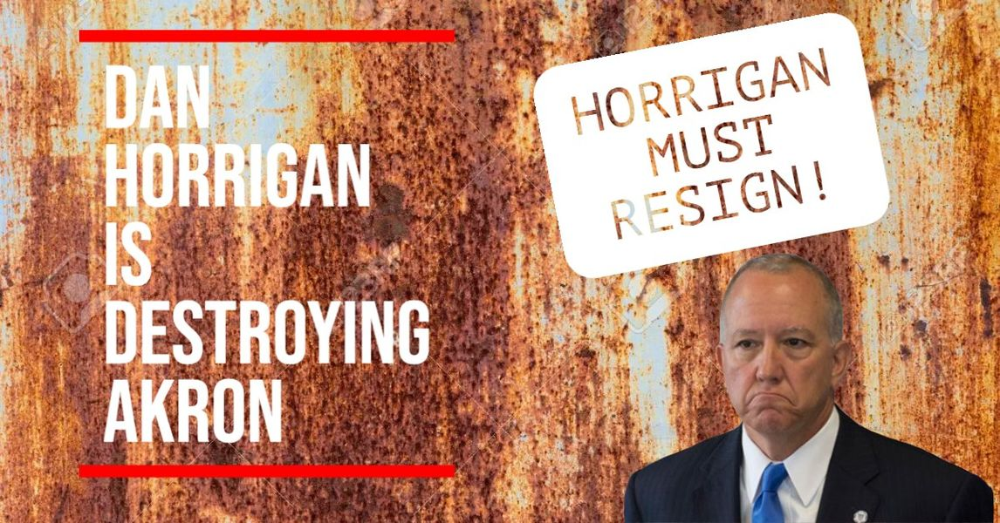

Timeline photos
@[100064805494040:2048:City of Akron, Ohio - Mayor's Office] Dan Horrigan has:
NO PLAN for violence.
NO PLAN for homelessness.
NO PLAN for crime.
NO PLAN for housing.
All he cares about are his precious parks. He is spending $25 million on parks... the LARGEST PARK BUDGET IN OUR HISTORY as a Firestone student is beaten to death, as 61 murderers sit in our jail (the most ever), as Akron the highest eviction rate in Ohio, AS JAYLAND WALKER was shot 60 times while unarmed.
And now he had to shut down 4th of July Rib, White and Blue because it's simply too dangerous to do otherwise.
We are all more at risk of literally dying in Akron with Horrigan as our mayor.
DAN HORRIGAN MUST RESIGN!